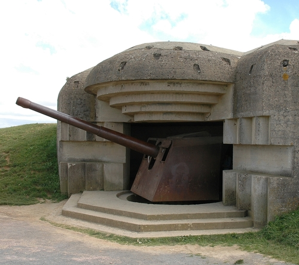

home
reizen
formulier
contacten
info

Duitse Bunkers
Duitse bunkers Normandië
Voor een echte gechiedenis fanaat met pleinvrees. Ook krijg je een prachtige tour door de oude bunkers die gebruikt werden tijdens d-day.
Een ondergronds spektakel. Duitse bunkers Normandië info:
Uitleg:
Een prachtige reis door de oude Duitse bunkers van Normandië. De bunkers die gebruikt werden door de Duitsers op D-Day.
Een echte reis voor mensen die hun agorafobie willen overwinnen. Een reis door de oude bunkers en na de reis een nacht overnachten in de bunker zelf.
De reis:
Je begint op het strand van Normandië waar D-Day begon.
Waar veel mensen zijn gevallen aan de bunkers en de machine geweren. Maar was een belangrijk begin van de kanteling van de oorlog. Vanaf het strand gaan we beginnen met de tour. We gaan door de bunkers heen en kunnen ze van binnen uit bekijken.
Na onze tour gaan we met de groep een nacht besteden in de bunker. Een reis door de geschiedenis.
Benodigheden:
Goede schoenen
Een dikke jas voor mogelijk de kou
Water
Snacks (eigen optie)
Een slaapzak
Een kussen
Enige nodige medicische benodigheden